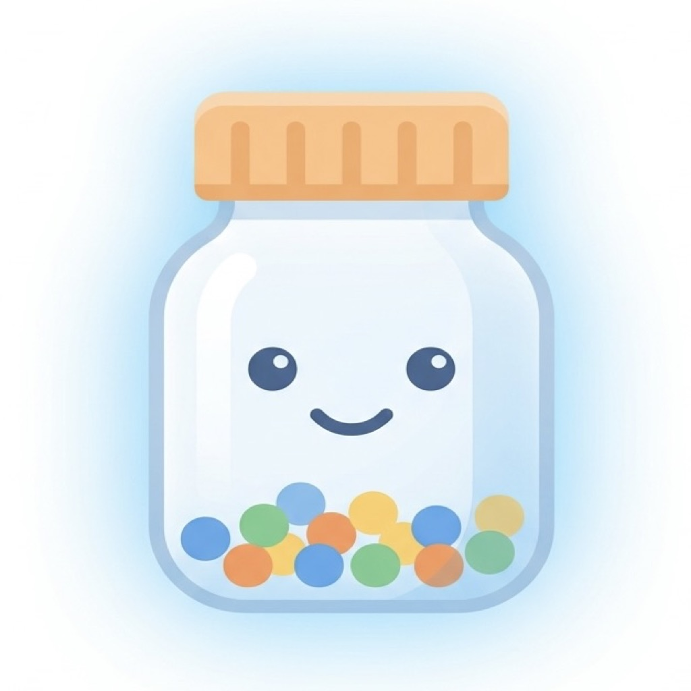

Never miss a dose.
DoseTrack ("we," "us," "the app") is a medication reminder app made by an independent developer. This policy explains what information DoseTrack collects, how it's used, and the choices you have. We wrote it in plain language on purpose — no legal filler.
Nothing leaves your device. Your medications, schedules, dose history, notes, and any bottle photos you add are stored only in the app's local database on your iPhone.
Creating an account — via email/password, Sign in with Apple, or Sign in with Google — lets you sync your data across devices and unlock optional features. When you do, we (through our backend provider, Supabase) store:
We do not collect your location, contacts, browsing history, or any data from Apple Health/HealthKit — DoseTrack does not use HealthKit.
DoseTrack lets an account holder invite another DoseTrack user to act as a caregiver — for example, an adult child helping a parent manage medications. If you use this feature:
This sharing only happens if you explicitly set it up. We never share your data with a caregiver, or anyone else, without your direct action.
We use the information above only to operate the app's features:
We do not use your data for advertising, and we do not sell, rent, or trade your information to third parties for any purpose.
DoseTrack relies on a small number of service providers to operate account-based features:
None of these providers are permitted to use your DoseTrack data for their own advertising or independent purposes.
You can permanently delete all of your data — both on-device and, if you have an account, on our servers — at any time from Settings → Delete All Data. This action is immediate and cannot be undone. If you'd like help deleting your data or have questions about what we store, contact us below.
DoseTrack is rated 4+ and is not directed at children. We do not knowingly collect personal information from children under 13. If you believe a child has provided us with personal information, please contact us and we will delete it.
We use industry-standard practices to protect your information, including encrypted network connections (HTTPS/TLS) for all data sent to our servers, and Supabase's built-in access controls to keep your account data isolated from other users.
No method of electronic storage or transmission is 100% secure, and we can't guarantee absolute security — but we don't ask for or store more than what's needed to run the app.
If we make material changes to this policy, we'll update the "Last updated" date above and, where appropriate, notify you within the app.
Questions about this policy or your data? Email us at 4032332@gmail.com.
DoseTrack is a reminder tool, not medical advice. Always follow your healthcare provider's instructions.